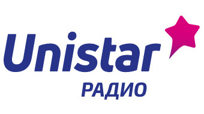

Расчет рекламной кампании
Город вещания
Все города
Тип
Ролик в блоке
Время выходов
Прайм-тайм
Период
7 дней
Хронометраж
10 секунд
Выходов в день
5
Сумма без скидки
2 739 BYN
Скидка за объем
-55%
ИТОГО
2 739 BYN